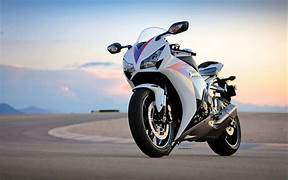
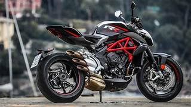

MOTORCYCLE STORE

A motorcycle (motorbike, bike; uni (if one-wheeled); trike (if three-wheeled); quad (if four-wheeled)) is a lightweight private 1-to-2 passenger personal motor vehicle steered by a handlebar from a saddle-style seat.[1][2][3]
Motorcycle designs vary greatly to suit a range of different purposes: long-distance travel, commuting, cruising, sport (including racing), and off-road riding. Motorcycling is riding a motorcycle and being involved in other related social activities such as joining a motorcycle club and attending motorcycle rallies.
The 1885 Daimler Reitwagen made by Gottlieb Daimler and Wilhelm Maybach in Germany was the first internal combustion petroleum-fueled motorcycle. In 1894, Hildebrand & Wolfmüller became the first series production motorcycle.[4][5]
Globally, motorcycles are comparable numerically to cars as a method of transport: in 2021, approximately 58.6 million new motorcycles were sold around the world, while 66.7 million cars were sold over the same period.[6]
In 2022, the top four motorcycle producers by volume and type were Honda, Yamaha, Kawasaki, and Suzuki.[7] According to the US Department of Transportation, the number of fatalities per vehicle mile traveled was 37 times higher for motorcycles than for cars.

The term motorcycle has different legal definitions depending on jurisdiction (see § Legal definitions and restrictions).
There are three major types of motorcycle: street, off-road, and dual purpose. Within these types, there are many sub-types of motorcycles for different purposes. There is often a racing counterpart to each type, such as road racing and street bikes, or motocross including dirt bikes.
Street bikes include cruisers, sportbikes, scooters and mopeds, and many other types. Off-road motorcycles include many types designed for dirt-oriented racing classes such as motocross and are not street legal in most areas. Dual purpose machines like the dual-sport style are made to go off-road but include features to make them legal and comfortable on the street as well.
Each configuration offers either specialised advantage or broad capability, and each design creates a different riding posture.
In some countries the use of pillions (rear seats) is restricted.
BIKE COLLECTIONS
- hero
- bajaj
- honda
- yamaha
- ktm
- suzuki
PRICE OF THE BIKES
| hero | 75000 |
| bajaj | 85000 |
| honda | 85000 |
| yamaha | 95000 |
| ktm | 150000 |
| suzuki | 150000 |